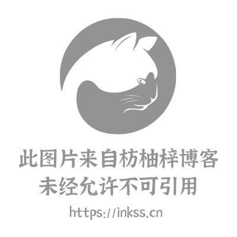

腾讯云 EdgeOne 我已使用一阵子，整体表现优异，体验良好。于此记录下使用中的部分心得。
EdgeOne
腾讯云 EdgeOne 每个账户支持兑换一个免费版套餐，当账户中存在免费套餐时，付费套餐订阅到期后将自动转为免费版[1]而非隔离（停服）。所以如果有多个域名需要接入 EdgeOne 可自行付费购买个人版，待过期后降级为免费版。为了最大化薅腾讯云羊毛，建议先以首单优惠资格以 4.8 元购买一个月的 EO 个人版套餐，之后如需另加域名，除免费套餐外，还可以在会员续费页面以 6.8 元订阅个人版套餐。


基础配置
域名接入
由于我的域名原本托管于 DNSPod，因此在接入腾讯云 EdgeOne 时，直接选择了 DNSPod 托管方式，类似于 NS 接入。
需要特别注意的是，若采用 CNAME 接入方式，对于托管在 CloudFlare 的域名，由于其默认启用了 CNAME Flattening（CNAME 拉平），将导致 EdgeOne 的域名校验失败。该功能仅在 CloudFlare 的付费计划中才可关闭，免费用户无法绕过此限制。如需将域名托管回腾讯云，请务必先在 CloudFlare 中关闭 DNSSEC，否则可能导致解析异常。
域名回源
腾讯云 EdgeOne 的一大亮点在于其回源配置支持自定义端口的 IPv6 回源。这一特性使我们能够绕过运营商对公网 IPv6 的 80、8080、443 等端口的封锁，从而实现通过普通域名（无需端口号）访问内网服务。
DDNS-GO 目前已支持更新 EdgeOne 中的解析记录，当本地 IPv6 前缀发生变更时，可自动推送新的地址至 EdgeOne。 或者也可采用传统模式：将本地设备的地址同步到二级域名，并在 EdgeOne 的回源配置中填写该域名作为回源地址，同时将回源 Host 设置为目标服务的真实域名。
一个不太靠谱的流言：听说回源域名为 speedtest.xxx.xxx 时有神秘加成。
加速与安全
安全防护
坦白地讲，EdgeOne Web 防护的默认拦截页面（见下图），丑得别具一格。根据官方套餐规则，仅基础版及以上版本才支持自定义拦截页面。因为它太丑外加不能自定义这点，我个人不是很愿意用，相较而言更乐意使用加速规则引擎或者边缘函数实现相关逻辑。
默认拦截页面

EdgeOne 安全服务的优先级很高，起码在整个 EO 体系中是没有办法绕过默认拦截页面的。

除此之外，Web 防护模块中的速率限制、流量防盗刷和默认的免费漏洞防护规则集还是值得开启的。

从整体来看，免费版套餐在此模块中可供调整的参数较为有限[2]，难以满足复杂场景的定制需求。
站点加速
- ① CORS 设定
在「规则引擎」中创建规则，匹配类型设置为 HTTP 请求头、头部名称 Origin，头部值为需要允许的域名（例如 https://inkss.cn），接着在操作中选取修改 HTTP 节点响应头，分别填入如下内容：
| 类型 | 头部名称 | 头部值（支持变量） |
|---|---|---|
| 设置 | Access-Control-Allow-Origin | ${http.request.headers["Origin"]} |
| 设置 | Access-Control-Allow-Methods | GET,POST,PUT,DELETE,PATCH,OPTIONS |
| 设置 | Access-Control-Allow-Credentials | true |
- ② Referer 校验
相比于 CDN 的防盗链配置，EdgeOne 只能通过正则匹配进行 Referer 校验。同样新建规则，匹配类型 HTTP 请求头、头部名称 Referer、运算符正则不匹配，头部值如下：
(?:^|\b)(?:https?:\/\/)?(?:[a-zA-Z0-9-]+\.)*(?:inkss\.cn|localhost)(?:\/.*)?(?:\b|$) |
操作可以选择 HTTP 应答，响应状态码 403/444，响应页面：自行创建一个 text/html 页面。
- ③ User-Agent 校验
和 Referer 校验类似，同样为 HTTP 请求头匹配，检验 User-Agent 是否存在、正则匹配：
(?i)(Go-http-client|WanScannerBot|Wget|Python|okhttp|Scrapy|HeadlessChrome) |
- ④ 图片防盗链替换
相比于使用 403 返回错误状态码，使用一张预设图片返回[3]，提醒盗链行为的效果更佳。
https://static.inkss.cn/img/article/25-10@EdgeOne使用/Hexo博客封面.png |


TIP：必须将节点缓存 TTL 设置为不缓存以避免节点缓存防盗链图片。
- ⑤ 突破安全防护规则数量限制
免费版的安全防护功能最多支持 5 条自定义规则。不过，可以借助规则引擎稍作突破：将所有需处理的请求通过 URL 重定向集中到一个固定地址，然后在自定义规则中对该地址进行拦截，从而实现统一过滤。
边缘函数
EdgeOne 支持的边缘函数 API 可参考边缘安全加速平台 EO Runtime APIs，官方示例详见此链接。以下是本站实际使用的一些边缘函数[4]示例。
- 444 响应 | URL 重定向
在规则引擎的 HTTP 应答模块中，EO 以 HTTP 200 响应客户端，但会透传设定的响应状态码，客户端最终感知到的是透传状态码。然而，对于状态码 444，按常规理解应表示服务器主动断开连接、不返回任何响应，因此客户端本不应接收到任何结果。这一行为与预期不符，略显反直觉。
新建一个边缘函数，实现 444 Response：函数代码如下，触发条件设定为 if ($url equal "/444")，另在原规则引擎处转为使用访问 URL 重定向，目标路径 /444。最终效果：示例链接。
addEventListener('fetch', event => { |
URL 重定向规则中自定义 Hostname 不支持带端口的域名配置，也可以使用边缘函数实现跳转。
addEventListener('fetch', event => { |
- 插入统计代码
边缘函数还可以在响应阶段动态插入统计代码，无需改动源站内容。
addEventListener('fetch', event => { |
也可尝试将节点获得到的 客户端 IP 插入到 <head> 字段中，以供静态博客展示。
体验总结
响应速度
本站域名自 2018 年起已完成 ICP 备案，所以此处选择的加速区域为全球可用区，响应速度非常理想。

注：如果加速方式为「全球可用区（不含中国大陆）」，国内访问速度似乎不太理想。
部署方式


自建博客至今，部署方式经历了多轮迭代。早期采用 DNS 分流策略：境内流量指向腾讯云 CDN，境外流量则由 GitHub Pages 进行内容分发。如今已迁移至 EdgeOne，得益于其全球可用区，理论上可实现全站统一分发。但考虑到曾收到腾讯云备案审查的“违禁文章”通知，那时为博客添加了内容过滤机制，设定部分文章在境内访问时不可见，例如此篇：Package Manager Proxy Settings - 枋柚梓。
因此，此过滤逻辑依旧保留。利用 EdgeOne 的规则引擎实现境外访问的回源重定向，内容由 GitHub Pages 提供。你可以通过以下域名访问本站的境外版本：枋柚梓[5] ，原始仓库：inkss/inkss-website。
另一个重要变动是缓存刷新机制。相比于传统 CDN，EdgeOne 免费版的刷新额度少得可怜：EO 免费版站点每日仅支持 1000 个刷新额度，而 CDN 的这个值为 20000 个。此前我曾写过一个 Hexo 插件：hexo-deployer-tencent，用于部署到 COS 并刷新 CDN 缓存。所以对此处加以改动以支持 EdgeOne 的缓存刷新，基础的逻辑为：当待刷新链接未超过配额时，优先按 URL 进行刷新（清除缓存）；一旦超出配额，则按 Hostname 执行刷新（标记过期）。
最终点评
EdgeOne 给我带来的最大优势是无限流量，其次是 IPv6 自定义端口回源。前者减少了支出（腾讯云 CDN 即使是优惠价 100GB 流量也要 14 元 ），后者则实现了在 IPv4 环境下访问家中内网服务。另外一些优势还包括：全球加速、自动续签 SSL 证书，以及付费版可转为免费版以支持更多域名等。
但是，此类优惠能持续多久呢？这是一个未知数。以 CDN 为例，早些年腾讯云每月会自动赠送免费额度，后来改为用户需每月领取优惠券以激活免费额度，再后来 CDN 的免费额度彻底取消了。 作为腾讯云的老用户，目前我的账户中尚且存在的福利仅剩下对象存储的免费额度资源包了[6]。
良心云还是“凉心云”呢？拭目以待。